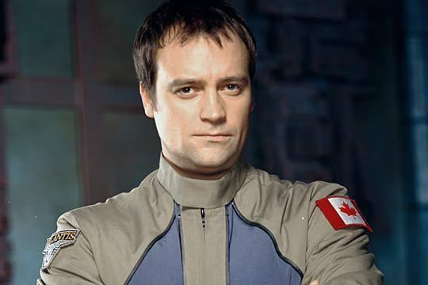
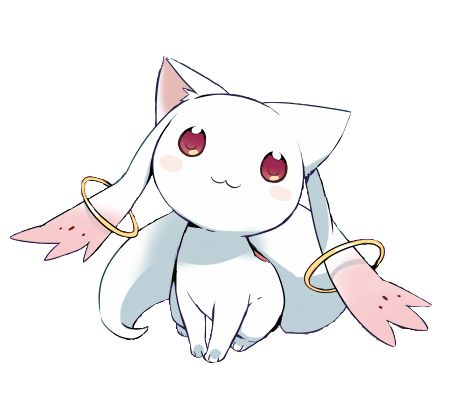

Elie
I have always been interested in computer science, math and music. I have played the piano for 12 years and the continuo for 2 years. In 8th grade, I learned HTML, CSS and a little bit of Lua, following the tutorials made by "le site du zero" as well as thenewboston on Youtube. In 10th grade, I bought a Raspberry Pi, and created different types of servers (Mumble, web, mail, minecraft, FTP,...). I also had an internship that year in the computer science department of the university of Medicine in Tours. I helped them for things like installing wireless hotspots for futures exams, rebooting devices. I also went with a friend to a programming summer camp called "Telligo" where we both decided to create a Minecraft launcher in Java. Two years ago, I got employed by the company Axialys for a month. I created python scripts and managed databases for them in addition to the installation and the deployment of an anti-virus. During High school, I created lots of different programs in Basic Casio on my calculator (using the graphical interface). Last summer, I got an internship at Axialys and created a RESTful API in python using the Flask framework in order for them to better use their websites and databases. Last semester, I have for the first time created an optical character recognition program and particularly a neural network.
This project obviously is another opportunity for putting into practice all the knowledge I acquired this year and last year. This project will allow us to create an orbital simulator. Knowing my taste and former experiences, and after discussion with the group, it seemed obvious to me to be in charge of the development of the saving and loading part, the GUI part as well as the setting up and management of our own git repository because I have already set up git repositories and I already had knowledge in those fields (math and Linux).
This project obviously is another opportunity for putting into practice all the knowledge I acquired this year and last year. This project will allow us to create an orbital simulator. Knowing my taste and former experiences, and after discussion with the group, it seemed obvious to me to be in charge of the development of the saving and loading part, the GUI part as well as the setting up and management of our own git repository because I have already set up git repositories and I already had knowledge in those fields (math and Linux).

Samuel
I discovered the joys of programming very young, and already in elementary school, I had started to make a text based RPG (in a very, very simple, and French, language). Since then, I learned different kinds of programming languages, the abstract math behind programing being what I like the most in computer science. Since I have admitted to Epita, I had the possibility to learn programming with a new rigor, that the different kinds of tutorial on Internet lacks, and I am happy to learn that way.
The first two projects didn't produce results as good as I wanted to, but I was able to learn a lot through those. The first project taught me how important it is to correctly use git, that no matter how great a project is (or fun a game is), it is pointless if the project is unplayable, or if it fails as a presentation material. The second project taught me how a standard C project on Linux is made, how to actually use git (finally!) and to be aware of group cohesion. This is why, no matter if this project is a success or not, I know that I will learn a lot from it, and I look forward to doing it, with the team.
The first two projects didn't produce results as good as I wanted to, but I was able to learn a lot through those. The first project taught me how important it is to correctly use git, that no matter how great a project is (or fun a game is), it is pointless if the project is unplayable, or if it fails as a presentation material. The second project taught me how a standard C project on Linux is made, how to actually use git (finally!) and to be aware of group cohesion. This is why, no matter if this project is a success or not, I know that I will learn a lot from it, and I look forward to doing it, with the team.
Anh
My name is Anh. I come from Vietnam, a hot, small but lively and fancy country.
Before going to EPITA, I had an awful year as a freshman in a Vietnam university, after which I still knew nothing about computer science and programming. Therefore, I am profoundly grateful for the knowledge I have earned and the encouragement I have received from friends and teachers.
StarDwarf is the third project at EPITA. It is obvious that this one is much more complicated and difficult than the previous ones. However, I am very excited about it as I know that I can learn a lot of from this project and my friends who I am working with.
Before going to EPITA, I had an awful year as a freshman in a Vietnam university, after which I still knew nothing about computer science and programming. Therefore, I am profoundly grateful for the knowledge I have earned and the encouragement I have received from friends and teachers.
StarDwarf is the third project at EPITA. It is obvious that this one is much more complicated and difficult than the previous ones. However, I am very excited about it as I know that I can learn a lot of from this project and my friends who I am working with.